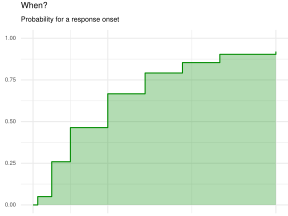
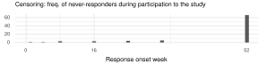
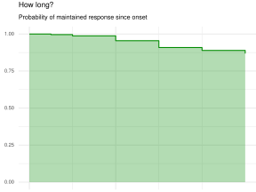
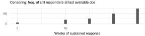
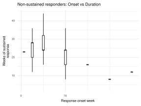
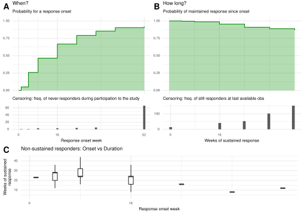

FCollin 03 Nov 2021
file_nm <- "inst/rcode/study.R"
knitr::read_chunk(file_nm)
message("R code chunks read from:\n", file_nm)
#> R code chunks read from:
#> inst/rcode/study.R
devtools::load_all()
#> ℹ Loading analysis.pack
library(dplyr)
#>
#> Attaching package: 'dplyr'
#> The following objects are masked from 'package:stats':
#>
#> filter, lag
#> The following objects are masked from 'package:base':
#>
#> intersect, setdiff, setequal, union
library(ggplot2)
prepare_adam_pasi() %>%
attach()
# Analysis dataset
ads <- adsl %>%
select(USUBJID, ARMCD) %>%
left_join(adpasi) %>%
filter(PARAMCD == "PASITOT") %>%
rename(
subj = USUBJID,
pasi = AVAL,
grp = ARMCD,
week = AVISIT
) %>%
mutate(
time = gsub("^WEEK(.*)$", week, replacement = "\\1"),
time = as.numeric(time)
) %>%
select(subj, grp, week, pasi, time) %>%
arrange(subj, time) %>%
as_tibble()
#> Joining, by = "USUBJID"
ads
#> # A tibble: 8,100 × 5
#> subj grp week pasi time
#> <chr> <fct> <chr> <dbl> <dbl>
#> 1 SUBJECT 001 ARM B WEEK00 27 0
#> 2 SUBJECT 001 ARM B WEEK01 22.5 1
#> 3 SUBJECT 001 ARM B WEEK04 18.2 4
#> 4 SUBJECT 001 ARM B WEEK08 8.8 8
#> 5 SUBJECT 001 ARM B WEEK16 4.2 16
#> 6 SUBJECT 001 ARM B WEEK24 1 24
#> 7 SUBJECT 001 ARM B WEEK32 0 32
#> 8 SUBJECT 001 ARM B WEEK40 0 40
#> 9 SUBJECT 001 ARM B WEEK52 0 52
#> 10 SUBJECT 002 ARM B WEEK00 23.2 0
#> # … with 8,090 more rows
# Last Observation Carried Forward, adapated from `zoo::na.locf`.
locf <- function(y) {
ok <- which(!is.na(y))
if (is.na(y[1L])) ok <- c(1L, ok)
gaps <- diff(c(ok, length(y) + 1L))
rep(y[ok], gaps)
}
# Next Observation Carried Backward derived from locf.
nocb <- function(y) rev(locf(rev(y)))
apply_ifany <- function(x, cond, fun = min, otherwise = Inf) {
if (any(cond)) do.call(fun, list(x[cond]))
else otherwise
}
pasi_fun <- function(x) {
y <- cut(
x,
breaks = c(-Inf, 0, 2, 3, Inf),
labels = c("PASI = 0", "PASI <= 2", "PASI <= 3", "PASI > 3"),
include.lowest = TRUE
)
y <- factor(y, levels = c(levels(y), "Lost Response", "Missing"))
y[is.na(y)] <- "Missing"
y
}
theme_spin <- function(...) {
theme_minimal() +
theme(
text = element_text(size = 7),
title = element_text(size = 7)
) +
theme(...)
}
StatStepArea <- ggproto(# nolint - ggplot syntax
"StatStepArea", Stat,
compute_group = function(data, scales) {
data <- as.data.frame(data)[order(data$x), ]
n <- nrow(data)
if (n <= 1) {
# Need at least one observation
return(data[0, , drop = FALSE])
}
ys <- rep(1:n, each = 2)[-2 * n]
xs <- c(1, rep(2:n, each = 2))
x <- data$x[xs]
y <- data$y[ys]
data_attr <- data[xs, ]
data_attr$x <- x
data_attr$y <- y
data_attr$ymin <- 0
data_attr$ymax <- y
y <- data_attr
y
},
required_aes = c("x", "y")
)
stat_steparea <- function(mapping = NULL,
data = NULL,
geom = "area",
position = "identity",
na_rm = FALSE,
show_legend = NA,
inherit_aes = TRUE,
...) {
layer(
stat = StatStepArea, data = data, mapping = mapping, geom = geom,
position = position, show.legend = show_legend, inherit.aes = inherit_aes,
params = list(na.rm = na_rm, ...)
)
}
ads <- ads %>%
group_by(subj) %>%
mutate(
rsp = nocb(pasi),
nocbfl = is.na(pasi) & !is.na(rsp),
# PASI Categories
pasic = pasi_fun(rsp),
# First time lower than pasi <= 2
crsp_onset = apply_ifany(time, rsp <= 2 & !is.na(rsp)),
# First wk after wk onset when pasi > 2
crsp_end = apply_ifany(time, rsp > 2 & !is.na(rsp) & time > crsp_onset),
rsp = factor(
ifelse(time >= crsp_end, "Lost Response", as.character(pasic)),
levels = levels(pasic)
),
subset = case_when(
all(crsp_onset == Inf) ~ "Never\nresponder",
all(crsp_onset < Inf & crsp_end > 52) ~ "Continuous\nresponder",
all(crsp_onset < Inf & crsp_end < Inf) ~ "Non-sustained\nresponder"
)
) %>%
ungroup() %>%
mutate(subj = factor(subj, levels = unique(subj[order(-1 * crsp_onset)])))
ads
#> # A tibble: 8,100 × 11
#> subj grp week pasi time rsp nocbfl pasic crsp_onset crsp_end subset
#> <fct> <fct> <chr> <dbl> <dbl> <fct> <lgl> <fct> <dbl> <dbl> <chr>
#> 1 SUBJE… ARM B WEEK… 27 0 PASI… FALSE PASI… 24 Inf "Conti…
#> 2 SUBJE… ARM B WEEK… 22.5 1 PASI… FALSE PASI… 24 Inf "Conti…
#> 3 SUBJE… ARM B WEEK… 18.2 4 PASI… FALSE PASI… 24 Inf "Conti…
#> 4 SUBJE… ARM B WEEK… 8.8 8 PASI… FALSE PASI… 24 Inf "Conti…
#> 5 SUBJE… ARM B WEEK… 4.2 16 PASI… FALSE PASI… 24 Inf "Conti…
#> 6 SUBJE… ARM B WEEK… 1 24 PASI… FALSE PASI… 24 Inf "Conti…
#> 7 SUBJE… ARM B WEEK… 0 32 PASI… FALSE PASI… 24 Inf "Conti…
#> 8 SUBJE… ARM B WEEK… 0 40 PASI… FALSE PASI… 24 Inf "Conti…
#> 9 SUBJE… ARM B WEEK… 0 52 PASI… FALSE PASI… 24 Inf "Conti…
#> 10 SUBJE… ARM B WEEK… 23.2 0 PASI… FALSE PASI… 16 Inf "Conti…
#> # … with 8,090 more rows
library(survival)
data <- ads %>%
group_by(subj) %>%
mutate(wk_last = max(time[rsp != "Missing"])) %>%
ungroup() %>%
distinct(subj, crsp_onset, wk_last, crsp_end) %>%
mutate(
km_rsp_1 = crsp_onset < Inf,
time_1 = ifelse(crsp_onset < wk_last, crsp_onset, wk_last),
km_rsp_2 = crsp_end < Inf,
time_2 = ifelse(crsp_end < wk_last, crsp_end, wk_last) - crsp_onset
)
data
#> # A tibble: 900 × 8
#> subj crsp_onset crsp_end wk_last km_rsp_1 time_1 km_rsp_2 time_2
#> <fct> <dbl> <dbl> <dbl> <lgl> <dbl> <lgl> <dbl>
#> 1 SUBJECT 001 24 Inf 52 TRUE 24 FALSE 28
#> 2 SUBJECT 002 16 Inf 52 TRUE 16 FALSE 36
#> 3 SUBJECT 003 Inf Inf 16 FALSE 16 FALSE -Inf
#> 4 SUBJECT 004 4 Inf 52 TRUE 4 FALSE 48
#> 5 SUBJECT 005 32 Inf 52 TRUE 32 FALSE 20
#> 6 SUBJECT 006 24 Inf 52 TRUE 24 FALSE 28
#> 7 SUBJECT 007 8 Inf 52 TRUE 8 FALSE 44
#> 8 SUBJECT 008 8 Inf 52 TRUE 8 FALSE 44
#> 9 SUBJECT 009 4 Inf 52 TRUE 4 FALSE 48
#> 10 SUBJECT 010 16 Inf 52 TRUE 16 FALSE 36
#> # … with 890 more rows
surv_mod <- survfit(Surv(time_1, km_rsp_1) ~ 1, data = data)
dta_gg <- summary(
surv_mod, time = unique(ads$time)
)[c("time", "n.censor", "surv")] %>%
as_tibble() %>%
mutate(y = 1 - surv)
dta_gg
#> # A tibble: 9 × 4
#> time n.censor surv y
#> <dbl> <dbl> <dbl> <dbl>
#> 1 0 0 1 0
#> 2 1 1 0.95 0.0500
#> 3 4 1 0.741 0.259
#> 4 8 3 0.536 0.464
#> 5 16 3 0.333 0.667
#> 6 24 4 0.208 0.792
#> 7 32 5 0.146 0.854
#> 8 40 0 0.0964 0.904
#> 9 52 66 0.0796 0.920
gg1 <- dta_gg %>%
ggplot(aes(x = time, y = y)) +
geom_step(col = "green4") +
stat_steparea(fill = "green4", alpha = .3) +
scale_x_continuous(breaks = c(0, 16, 52)) +
coord_cartesian(ylim = c(0, 1), xlim = c(0, 52)) +
labs(
title = "When?",
subtitle = "Probability for a response onset"
) +
theme_spin(
axis.title = element_blank(),
axis.text.x = element_blank(),
plot.margin = margin(2, 0, 0, 5)
)
gg1
gg2 <- dta_gg %>%
ggplot(aes(x = time, y = n.censor)) +
geom_bar(stat = "identity") +
scale_x_continuous(breaks = c(0, 16, 52)) +
coord_cartesian(xlim = c(0, 52)) +
xlab("Response onset week") +
labs(
subtitle =
"Censoring: freq. of never-responders during participation to the study"
) +
theme_spin(
plot.margin = margin(2, 0, 0, 5),
axis.title.y = element_blank()
)
gg2
surv_mod <- survfit(Surv(time_2, km_rsp_2) ~ 1, data = data[data$km_rsp_1, ])
dta_gg <- summary(
surv_mod, time = unique(ads$time)
)[c("time", "n.censor", "surv")] %>%
as_tibble() %>%
mutate(y = surv)
gg3 <- dta_gg %>%
ggplot(aes(x = time, y = y)) +
geom_step(color = "green4") +
stat_steparea(fill = "green4", alpha = .3) +
scale_x_continuous(breaks = c(0, 16, 52)) +
coord_cartesian(ylim = c(0, 1)) +
labs(
title = "How long?",
subtitle = "Probability of maintained response since onset"
) +
theme_spin(
axis.title = element_blank(),
axis.text.x = element_blank(),
plot.margin = margin(2, 0, 0, 5)
)
gg3
gg4 <- dta_gg %>%
ggplot(aes(x = time, y = n.censor)) +
geom_bar(stat = "identity") +
scale_x_continuous(breaks = c(0, 16, 52)) +
scale_y_continuous(breaks = c(0, 100, 250)) +
xlab("Weeks of sustained response") +
labs(
subtitle = "Censoring: freq. of still responders at last available obs"
) +
theme_spin(
plot.margin = margin(2, 0, 0, 5),
axis.title.y = element_blank()
)
gg4
data <- ads %>%
group_by(subj) %>%
mutate(wk_last = max(week[rsp != "Missing"])) %>%
ungroup() %>%
distinct(subj, crsp_onset, wk_last, crsp_end) %>%
mutate(
km_rsp_1 = crsp_onset < Inf,
time_1 = ifelse(crsp_onset < wk_last, crsp_onset, wk_last),
km_rsp_2 = crsp_end < Inf,
time_2 = ifelse(crsp_end < wk_last, crsp_end, wk_last) - crsp_onset,
duration = time_2
)
gg5 <- data %>%
filter(duration > 0, crsp_end < Inf) %>%
mutate(censored = crsp_end == Inf) %>%
ggplot(aes(x = crsp_onset, y = duration)) +
geom_boxplot(aes(group = crsp_onset), outlier.shape = NA) +
scale_x_continuous(breaks = c(0, 16, 52)) +
xlab("Response onset week") +
ylab("Weeks of sustained\nresponse") +
labs(title = "Non-sustained responders: Onset vs Duration") +
scale_fill_viridis_c() +
theme_spin()
gg5
gg <- cowplot::plot_grid(
cowplot::plot_grid(
gg1, gg3, gg2, gg4,
align = "v",
ncol = 2,
rel_heights = c(3, 1.5),
labels = c("A", "B")
),
gg5,
ncol = 1,
rel_heights = c(2, 1),
labels = c(NA, "C")
)
gg
#> Warning: Removed 1 rows containing missing values (geom_text).